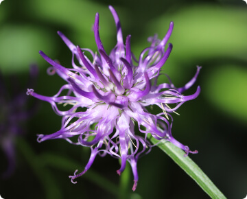

Innowacyjny dodatek - Czarciego Pazura
Zapewnia dodatkowe wsparcie w zwalczaniu stanów bólowych i zapalnych. Skoncentrowane składniki aktywne, opracowane we współpracy z lekarzami weterynarii, przynoszą szybkie i zauważalne efekty, szczególnie korzystne dla zwierząt z poważnymi problemami stawowymi.
